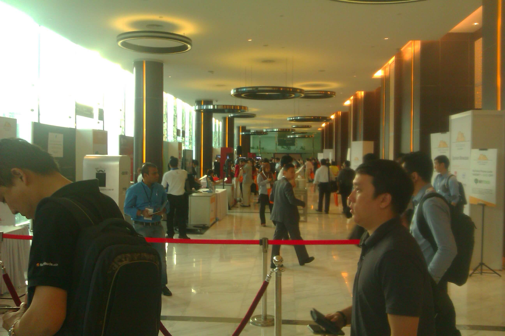

On the 21st of May, the first AWS Summit was held at Connexion@Nexus, located in Kuala Lumpur. A total of 1075 participants turned up that day which lasted from 7.30am till 6pm.

The summit was split into two tracks. The first track is Introduction to AWS while the second track is AWS Architecture. There were also exhibition booths ran by sponsors of the event. A good part of the exhibition was aimed at companies thinking about converting their system to the cloud.
The keynote introduced a new AWS feature called AWS Lambda, which was the core of several keynotes during the day. Other AWS components were re-introduced and have their uses featured in several applications. The keynotes in the advanced track mostly feature big data analytics while the introduction track introduces the audience to the various services that AWS has. There is also a dedicated talk about container computing, mostly referencing to Docker.

AWS Lambda features a serverless and stateless web app. All you need are functions and make use of S3 and DynamoDB without the need to set up your own infrastructure. Charges will occur every 100ms the process is running after the free monthly quota is used up.
Other services which were highlighted was AWS Machine Learning for analyzing data trends and predicting outcomes based on the data fed, AWS Kinesis for live streaming data, AWS Redshift is another kind of database which is used in big data analytics. Also featured was the elastic file system, or AWS EFS as well as AWS EMR, which is the equivalent of the Hadoop cluster.
The day ended with a lucky draw session contributed by the sponsors as well as from AWS themselves.
In conclusion, it was a fun and informative day for all who attended. The excitement of Lambda still echoed in various conversations long after the morning keynote and demo was addressed. There is also a growing support of local services to help other companies migrate to the cloud. This year's summit seems to be the first step for many Malaysian companies. But by next year's summit we're definitely going to see even more creative use out of AWS as more and more people will be exposed and using it.

P/S: This little selfie booth in the outside foyer really grabbed everyone's attention.